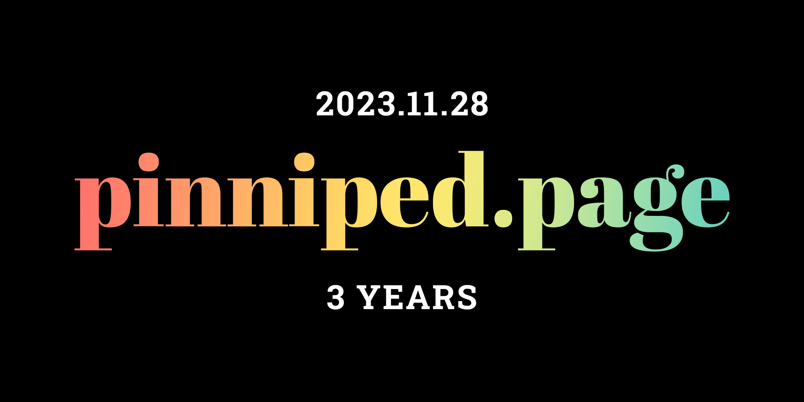

Blog Post / December 28th, 2023
3 years, 1 month
No way this website is another year older already (as of one month ago)! Wow, three years! Last website birthday, I said “hopefully I can eventually make something that makes my website more useful”, and I think that over this past year, I have delivered. Big projects like TicTacToe, the VALORANT Points calculator, Bus Ride Bingo (a favourite among my friends), PlainPlanes, Chess, “10/10 would recommend”, and much more are all very interesting, useful (to me at least), or fun. Check out the update-oriented blog posts for a complete record of what was added this year. To see how far my website has come (since I redesigned it), check out the first blog post. And as always, to whoever is reading this, whether you found my website online or were shown it by me, thanks for visiting.
 LAST UPDATED: December 28th, 2023
LAST UPDATED: December 28th, 2023